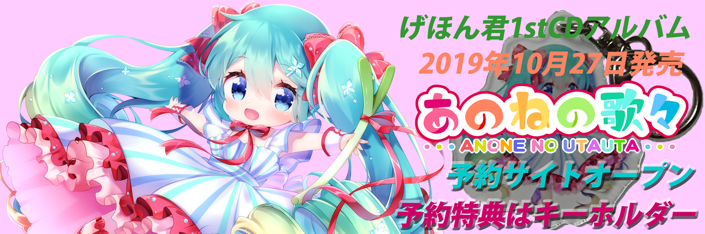
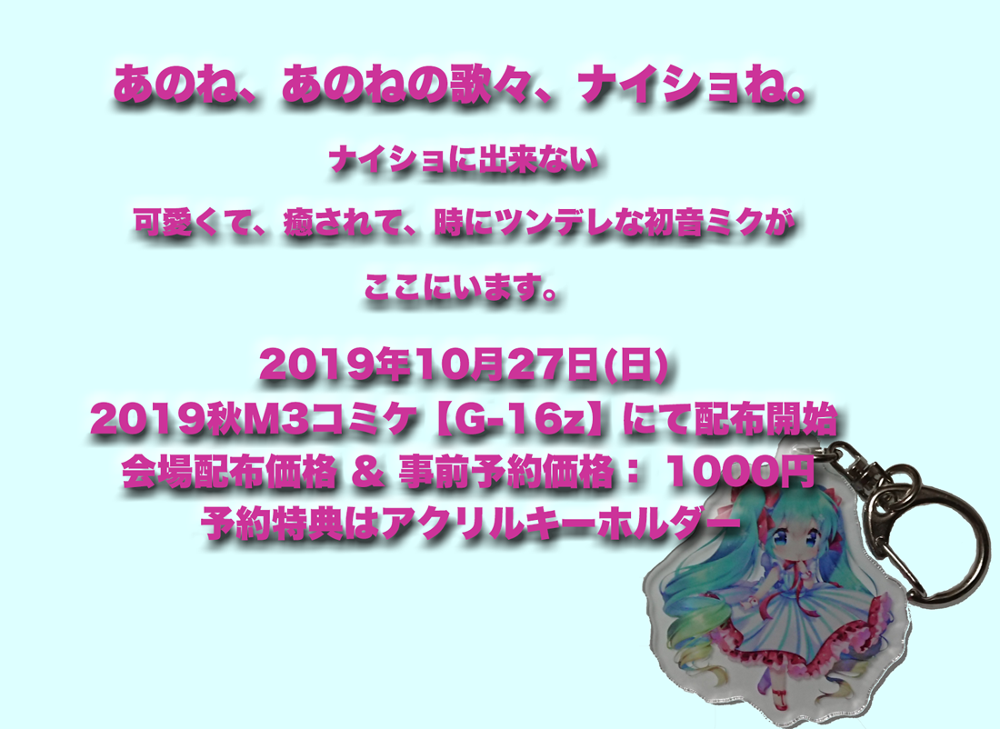
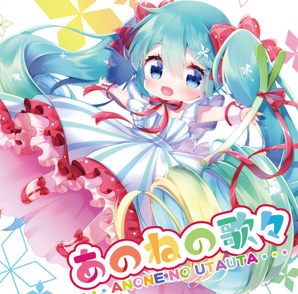

| Youtube | ||||||
| blog | Nico |


アルバムについて当アルバムは、前後の曲の歌詞がお互いに関連しながら一本のストーリーになっています。例えば、ナイショねで終わった後、名前を知らない君（初音ミク）を探し求めます。
是非、げほん君と7人の作詞家がリレーでつなぐあのねの歌々のストーリーもお楽しみください。
アルバムの音源は、動画サイト等に公開していない未公開バージョンです。マスタリングも依頼して、感動的な仕上がりになっています。アルバムバージョンは、今後も公開予定は無く、買っていただいた皆様のものです。
１．あのねの歌
『あのね、あのねの歌、ナイショね。』大昔、携帯電話のオリジナル着信音が3和音で登録できた時に作った曲です。初音ミクの最初のインストール後、半日で歌詞を考えて仕上げました。まさかアルバムの表題曲に出世するとは思いませんでした。
２．蒼い瞳の君
『君の名前教えてよ 見つけて僕は言葉をなくす 店に置いてあるVOCALOID』蒼い瞳の君とは、初音ミクのことです。歌詞の中の「君」が初音ミクとして聞いていただければ混乱しないと思います。曲調は、打楽器をループさせたボサノバPOPSです。お洒落な感じに仕上げました。
こふぁさんの描いた初音ミクのドレスはこ、の曲の歌詞のアジサイをイメージしてます。３．ネギネギ☆ふりふり
『ネギを振るよ、今日も歌いながら。』
Lyrics by milktea101学生時代、ベースがが半音ずつ上がってく和音の進行をと思いながら、作った曲です。歌詞募集で、milktea101さんの初音ミク愛溢れる歌詞を採用させて頂きました。
「別に楽しみじゃないけれど」「あなたの曲嫌いじゃない」と言いながらボカロPに曲をせがむ初音ミクが、すごくツンデレで気に入ってます。アレンジはアップテンポなジャズ & ビックバンド風です。
milktea1101さんは、ピアプロで大人気のイラストレーターです。動画を作るときは、いつもお世話になってます。４．チョコミントアイス
『チョコミントアイス、昼間にしたミステイクが甘さ満たして消えていく。』
Lyrics by キラキラったキラキラったさんの落選してお蔵入りだった歌詞を勿体無いから使わせて頂きました。歌詞先のパターンです。昼間のミスを甘いもので回復しながら、動画を見て夜更かしするちょっと病的な女心を描いてます。曲調はPOPSです。
５．キャンディ・ドリーム
『神様お願い、夢の中で会わせて！』
Lyrics by tanaka_tanako歌詞募集コンペにどんどん当選する実力派、tanaka_tanakoさんの歌詞を使わせて頂きました。サビ後半の「夢で逢えたらドキドキ」までの流れは、後から追加歌詞を依頼したのですが、2割り増しでtanaka_tanakoさんしてます。曲調はPOPSです。
６．苦い乙女とチョコレートDAY
『大好きな君が、他の子のチョコを受け取っているなんて。』
Lyrics by ShizukuShizukuさんは切ない歌詞を書くピアプロ作詞師です。一旦作った仮歌を、バレンタイ向けの歌詞に書き換えて、バレンタインにリリースしました。
バレンタインでケンカした次の曲は失恋ソングなので、歌詞の外で破局したことになっちゃってごめんなさい。
アレンジはボサノババラードで、ジョビン風のピアノを使ってます。また、間奏は「イパネマの娘」と「ソ・ダンソ・サンバ」風のスキャットをねじ込んでます。７．サクラ、舞い上がれ
『あなたと過ごした日々を忘れない。桜だってそう話しているから。』
Lyrics by キンキンさんこの曲は昔ある方とコラボを進めてましたが、お蔵入りした曲でした。歌詞募集で4人の歌詞を初音ミクで歌入れ審査まで行い、キンキンさんの歌詞に決まりました。
キンキンさんの歌詞は語感や歌いやすさがピカイチでした。
曲のアレンジは、狙って松任谷由実の春よ来いに寄せてます。８．マッチ売り少女の行末
『ここはおとぎの国で、天使が心をいざなう。でもこんな結末いらない。』
Lyrics by ケパメルヘンなケパさんの歌詞を、ワルツバラードに乗せて作りました。クリスマス前にリリースしたのですが、宣伝無しでクリスマス前にどんどん再生回数が上がった人気曲です。
アレンジの構成は黒澤健一氏の曲Oh Whyに寄せて作りました。
曲の前後の吹雪は、高級な音源HALION SONICから出してます。９．新人オフィスレディ
『ああ、目が覚めたわ。多分、、、』
Lyrics by アネキッドアネキッドさんとのコラボで仮歌まで作っていたものを、アルバムラストの曲に仕上げました。全般的にニコニコ動画バージョンからMIXやマスタリングし直してますが、この曲は当アルバム向けにテンポを速くしています。
終始アニメのエンディングのような曲で、初音ミクのサビ前半のハモリが気に入ってます。
この曲で3連休が終了して現実に戻るのでしょうか。
| 【Planner/ALL Music & Arranged】 | 【Lyrics】 |
| げほん君 | milktea101 |
| キラキラった | |
| 【Title & Illustration】 | tanaka_tanako |
| こふぁ | Shizuku | キンキンさん |
| 【Jaket Design】 | ケパ |
| NeK | アネキッド |